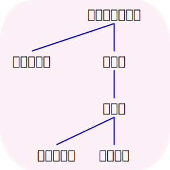

 Simplified Syntax Trees
Open Webapp Open source on GitHubInput a sentence with each phrase (typically consisting of one word and potentially its grammar particle) separated by a space and click submit. Now you can move the phrases and connect them by clicking on a phrase (it will turn red) and then clicking on the phrase you want to connect it to.
You can hold the alt key to also move all phrase connected to the phrase you are moving.
When you're done, you can export the tree as a PNG or SVG. The PNG will be a high resolution export with proper placement and a white background. The SVG has a transparent background. Alternatively, you can just save the link.
The input field changes to indicate which phrase a phrase is connected to (by adding a colon and the index of the phrase it is connected to, starting at 0). This means, that this tool will keep a history of your changes and can try to rebuild the current tree if you reload the page. You can also change phrases without any problems. However, if you want to remove or insert a phrase in front of an already connected phrase, the connection numbers will be wrong and it therefore won't work. Using colons in the text will also confuse this tool, so replace them with something else.
If you want to help improve this tool or maybe add some tutorials, you can do so on GitHub.
Example:
Sentence trees help visualize sentence structure to aid with understanding of long and complicated sentences with systematical grammar. They are basically a different, simplified version of the syntactic tree diagrams found in linguistic studies.
In Japanese, the verb or copula (at the end of the sentence) is at the top right. You can then connect the phrases to it going from the right to the left. Words in the RY renyō 連用 form connect to a yōgen 用言 (i.e. "adjective" or verb). Words in the RT rentai 連体 form connect to a taigen 体言 (i.e. noun). A phrase usually has all of the information it needs as children (sometimes things are only implied or connected as a parent – for example in attributive ("relative") clauses). You can also consult an inflection dictionary to find out what connects to a specific verb based on the particles.
You can practice how to connect the phrases at http://oaw-baumtester.ruhr-uni-bochum.de/.